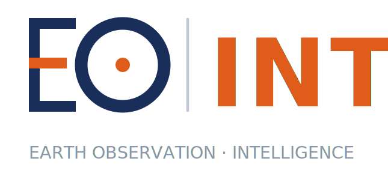

Flood Watch Ghana
2025 – 2026Django + PostGIS backend with MQTT ingestion from ESP32 gauges, Celery-scheduled Sentinel-1/2 flood detection and Twilio WhatsApp / SMS community alerts.
pygeofetch, pygeovision, pyunwrap and ps-gnn — CI-tested Python packages spanning 22 verified data providers, a full Sentinel-1 InSAR chain and 51 end-to-end GeoAI pipelines.

I work daily in Python with GDAL, Rasterio, PyTorch, Docker and PostgreSQL/PostGIS — building open-source EO platforms, Django/PostGIS and FastAPI backends for flood early warning and site screening, and GeoAI models for crop mapping, mining detection and deformation monitoring, validated with spatial cross-validation and field ground truth.
Six disciplines I combine to take a question from a bounding box and a date range to a validated, deployed answer.
Industry, NGO and research roles across Ghana and Austria — from mine surveying in the field to production AI in the cloud.
Supporting research on sustainable change through geospatial innovation — physics-informed and geometric deep learning, cloud-native radar interferometry and agentic AI for multi-sensor EO workflows.
Integrated mobile imagery, satellite NDVI/EVI time series and IoT ground sensors into a production monitoring system on AWS (EC2, S3). Diagnosed a crop-disease CNN that scored 95.8% in-domain but near-zero on smallholder farms, and fixed it with geographically stratified data and field re-validation.
Built a hybrid monitoring system fusing Sentinel-2 (10 m) with participatory plot-level ground truth, running automated change detection over 333.9 km² of land and forest.
Engineered PostgreSQL/PostGIS spatial databases and Python/GDAL pipelines converting GeoTIFF aerial imagery into multi-scale tile pyramids for web map delivery.
Operated Total Stations, GNSS receivers and UAVs to establish ground-control points used to validate satellite- and drone-derived models.
Federated search and resumable, checksum-verified download across 22 providers; STAC / GeoParquet export; 17 spectral indices; and a full Sentinel-1 InSAR chain through to SBAS time series.
From a bounding box and a date to a finished map: 51 pipelines, 119+ architectures, EO foundation models (Prithvi-EO-2.0, DINOv3, SAM) and a FastAPI inference server with ONNX, Jetson and cloud deployment.
AmbiguityNet predicts the integer phase ambiguity with a physics-informed loss, then routes each region to SNAPHU or the learned model — whichever its own benchmarks show is stronger.
Persistent-scatterer selection reframed as node classification: GCN, 8-head GAT and GraphSAGE over a 19-feature node vector, with 5-fold spatial-block cross-validation.
raster2pm (GeoTIFF → PMTiles, tested on 64 GB orthomosaics), geoviz, geo-repair, pygeoproof, geoshift, geo-auto-train and pygeospace for 2D and true-3D visualisation.
A few figures from the open-source platforms and field research above — each one traceable to code, data or a held-out evaluation.
Backend systems, InSAR and GeoAI research built on real data. Open any project for its aim, approach, data, results and validation.
Django + PostGIS backend with MQTT ingestion from ESP32 gauges, Celery-scheduled Sentinel-1/2 flood detection and Twilio WhatsApp / SMS community alerts.
Screens Solar, Wind, BESS and data-centre sites against 15 authoritative constraint layers with fatal-flag detection, weighted risk scoring, PDF reports and a QGIS plugin.
Sentinel-1 from the ASF Vertex API through an SBAS chain, with a Tiny U-Net on an 8-channel stack exported to ONNX for edge deployment.
67 SLC scenes; 2,211 candidate pairs reduced to 78 valid interferograms; −35.5 to −2.9 cm/yr, consistent with the peer-reviewed −39.1 cm/yr peak.
Clay fine-tuned on multi-temporal Sentinel-2 stacks for 10 m crop types, benchmarked against ResNet-50; F1 above 0.70 under spatial cross-validation.
Dual-stream U-Net + YOLOv8 fusing Sentinel-1 and Sentinel-2, trained on UAV-derived labels. Recall 82%, F1 0.79 on held-out tiles.
LSTM forecasting of 10 m Sentinel-2 NDVI from CHIRPS rainfall and ESA CCI soil moisture; R² above 0.50 and MAE below 0.07 at parcel level.
Fuses Sentinel-1/2, GEDI LiDAR, SMAP and ERA5 in object-based and temporal GNNs to forecast above-ground biomass over 10-year horizons under RCP scenarios.
3-month shoreline forecasts (MAE below 8 m) from Sentinel-1/2, Landsat, UAV orthomosaics and wave climatology, validated against DSAS transects.
YOLOv8 with multi-temporal analysis and ensemble uncertainty scoring to detect and count cocoa plants across smallholder and commercial layouts.
Boundary-clipped USGS Landsat NDVI trend: 32.0% of the district in measurable decline (9.2% strong, 22.8% moderate), concentrated around mining.
Camera / IMU / GPS fusion for metric-accurate road assessment, validated against 50 surveyed ground-truth measurements along 50 km of road.

An open-source EO software organisation and learning academy teaching applied remote sensing and GeoAI to African students and professionals with open tools. It is home to pygeofetch, ps-gnn, pyunwrap and the data-engineering toolkit, and its courses use genuine West African examples — White Volta vegetation, cocoa farms, Lake Volta shorelines and illegal mining in the Atewa range.
Led a five-component camera / IMU / GPS fusion architecture for metric-accurate road assessment, validated against 50 manually surveyed ground-truth measurements along 50 km of road. Manuscript submitted to IEEE Transactions on Intelligent Transportation Systems.
ORCID 0009-0002-1376-108X
Earth observation, geospatial data science, machine learning for satellite data and multi-scale spatial analysis, delivered in cooperation with the Copernicus programme.
Best Final Year Project Award (88%) for sensor-fusion and computer-vision research. Coursework in remote sensing, GIS, satellite image processing, photogrammetry, geodesy and cartography.
Recognition for academic work and research, and the professional credentials behind the cloud and ML engineering.
Erasmus Mundus Joint Master Degree.
BSc Geomatic Engineering, CWA 71.74%.
Academic excellence and professional service.
Open to research collaboration, contract work ,full-time and part-time roles in Earth observation,Software Engineering, geospatial engineering and GeoAI — in Europe, Africa or remote.
Based in Salzburg, Austria for the Copernicus Master's — working with teams in Ghana and remotely worldwide. Typically replies within 24 hours.